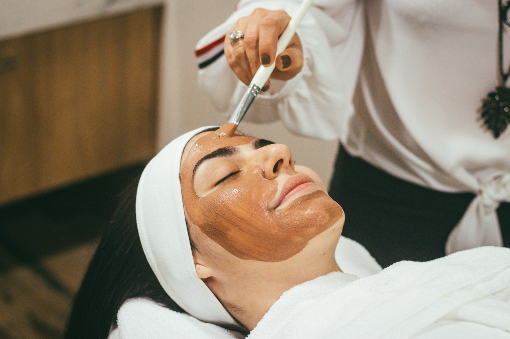

Temizlik, nazik peeling, maske ve nem. İlk kez gelenler için sakin bir başlangıç.
Ana Sayfa · Cilt Bakımı
Cildin kendi ışıltısı
Temizlik, denge ve nem. Parlaklık, cildi yormadan gelir.
Tıkanıklık hissi olan ciltler için daha uzun bir arındırma ve yatıştırma.
Özel bir günden önce, makyajın daha düzgün durduğu kısa bir ışıltı ritüeli.
İnce cilde nazik masaj ve nem. Şişlik hissini azaltmaya yönelik bir bakım.
Kuruluk ve gerginlik için bariyeri destekleyen, kokusu sade bir protokol.
Süreler ortalama plandır. Cildinizin ihtiyacına göre seansta uzayıp kısalabilir. Fiyat, randevu sırasında paylaşılır.

Cilt bakımı